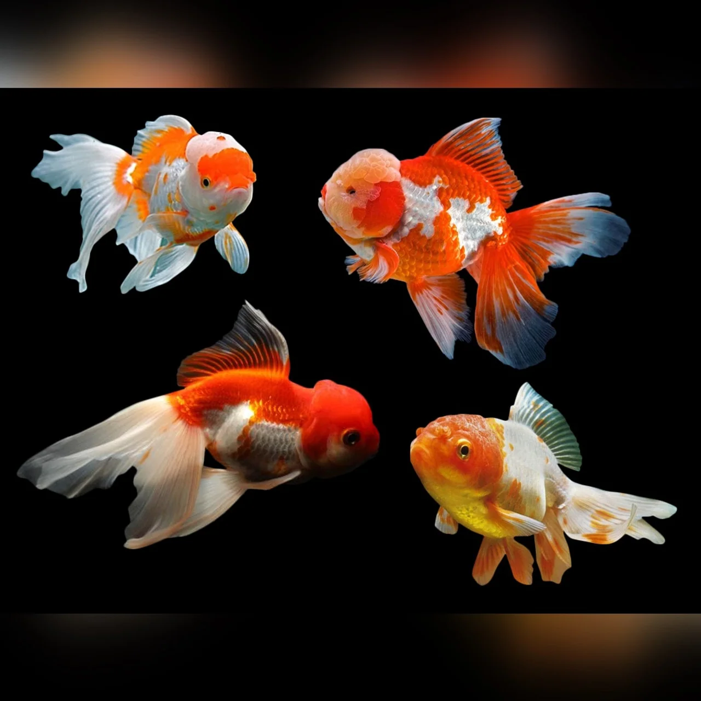
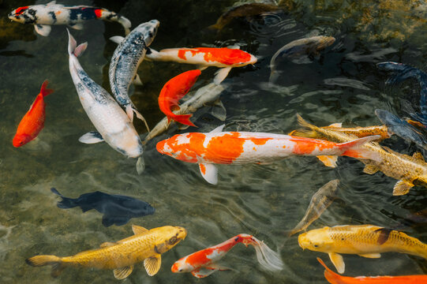

Conoce los Peces Orientales
Los Goldfish y los Koi son peces ornamentales muy conocidos por sus colores, variedades y larga historia en la acuariofilia. Aunque ambas especies pertenecen a la familia de los ciprínidos, presentan diferencias importantes en su tamaño, alimentación y necesidades de espacio. En esta sección conoceremos sus características, cuidados y reproducción.
Goldfish
Nombre científico: Carassius auratus.
El Goldfish es uno de los peces ornamentales más populares del mundo. Su domesticación comenzó en China y, con el paso del tiempo, se desarrollaron numerosas variedades como Oranda, Ryukin, Ranchu, Telescopio y Cometa. Son peces sociales que necesitan espacio, buena filtración y una alimentación equilibrada.

Características principales
- Nombre científico: Carassius auratus.
- Temperatura habitual: 18 a 24 °C.
- pH recomendado: aproximadamente 7.0 a 8.0.
- Agua dulce, bien oxigenada y filtrada.
- Comportamiento generalmente pacífico.
- Necesitan acuarios amplios.
- Pueden vivir más de 10 años con buenos cuidados.
Alimentación
Los Goldfish son omnívoros y necesitan una dieta variada. Se pueden alimentar con pellets de buena calidad, vegetales adecuados y alimentos complementarios. Es importante evitar darles más comida de la que pueden consumir y retirar los restos para no contaminar el agua.
Cuidados del acuario
Los Goldfish producen una cantidad considerable de desechos. Por eso necesitan una buena filtración biológica, cambios parciales de agua y controles periódicos de amoníaco, nitritos y nitratos. El amoníaco y los nitritos deben mantenerse en niveles no detectables.
Reproducción de los Goldfish
Los Goldfish son peces ovíparos, lo que significa que se reproducen mediante huevos. Cuando alcanzan la madurez sexual y las condiciones son adecuadas, pueden comenzar el proceso reproductivo.
¿Cómo identificar al macho y la hembra?
Durante la época reproductiva, los machos pueden desarrollar pequeños puntos blancos llamados tubérculos nupciales en los opérculos y las aletas pectorales. Las hembras pueden presentar un abdomen más redondeado cuando tienen huevos.
Proceso de reproducción
- El macho comienza a perseguir a la hembra.
- La hembra libera huevos adhesivos entre plantas o superficies.
- El macho libera esperma para fecundar los huevos externamente.
- Los huevos fecundados comienzan su desarrollo.
- Las larvas nacen generalmente después de 3 a 7 días, dependiendo de la temperatura.
Cuidados de los huevos y alevines
Los Goldfish adultos pueden comerse los huevos y las crías. Por esta razón, en la reproducción controlada se suelen separar los huevos o retirar a los adultos. Cuando los alevines comienzan a nadar libremente, necesitan alimentos muy pequeños, como infusorios y posteriormente nauplios de artemia.
Peces Koi
Nombre científico: Cyprinus carpio.
Los Koi son carpas ornamentales reconocidas por sus colores y patrones. Su crianza ornamental se desarrolló especialmente en Japón. Existen variedades como Kohaku, Sanke, Showa y Ogon. Debido a su tamaño, los Koi necesitan estanques grandes y sistemas de filtración adecuados.

Características principales
- Nombre científico: Cyprinus carpio.
- Temperatura habitual: 15 a 25 °C.
- pH recomendado: aproximadamente 7.0 a 8.5.
- Son peces de agua dulce.
- Pueden superar los 60 cm de longitud.
- Necesitan estanques amplios y profundos.
- Pueden vivir varias décadas con buenos cuidados.
Alimentación
Los Koi son peces omnívoros. Se alimentan principalmente de pellets formulados para carpas ornamentales. También pueden consumir vegetales y otros alimentos adecuados. La cantidad y frecuencia de alimentación deben ajustarse a la temperatura del agua, la edad y la actividad de los peces.
Cuidados del estanque
Los Koi necesitan estanques de gran capacidad para crecer y nadar correctamente. Es importante contar con filtración biológica, oxigenación, buena circulación del agua y mantenimiento periódico. También deben controlarse los niveles de amoníaco, nitritos y nitratos.
Reproducción de los Koi
Los Koi también son peces ovíparos y se reproducen mediante fecundación externa. Generalmente se reproducen durante las épocas cálidas, cuando la temperatura del agua aumenta y las condiciones son favorables.
¿Cómo identificar al macho y la hembra?
Las hembras adultas suelen presentar un cuerpo más ancho y un abdomen redondeado cuando desarrollan huevos. Los machos normalmente tienen una forma corporal más delgada y pueden desarrollar tubérculos nupciales durante la reproducción.
Proceso de reproducción
- Los machos comienzan a perseguir a las hembras.
- La hembra libera numerosos huevos adhesivos entre plantas o materiales de desove.
- Los machos fecundan los huevos externamente.
- Los huevos fecundados comienzan a desarrollarse.
- Las larvas suelen nacer aproximadamente entre 3 y 7 días después, según la temperatura del agua.
Cuidados de los huevos y alevines
Los Koi adultos pueden comerse los huevos y los alevines. En los criaderos se utilizan estanques o recipientes preparados para protegerlos. Los alevines necesitan agua de buena calidad, oxigenación y alimentos adecuados a su tamaño. Conforme crecen, se pueden seleccionar y clasificar según su desarrollo, salud y características.
Diferencias entre Goldfish y Koi
Aunque los Goldfish y los Koi comparten algunas características, sus necesidades de espacio son diferentes. Los Goldfish pueden mantenerse en acuarios amplios, mientras que los Koi necesitan estanques mucho más grandes debido a su crecimiento. Ambas especies requieren una alimentación equilibrada, agua de buena calidad y filtración adecuada.